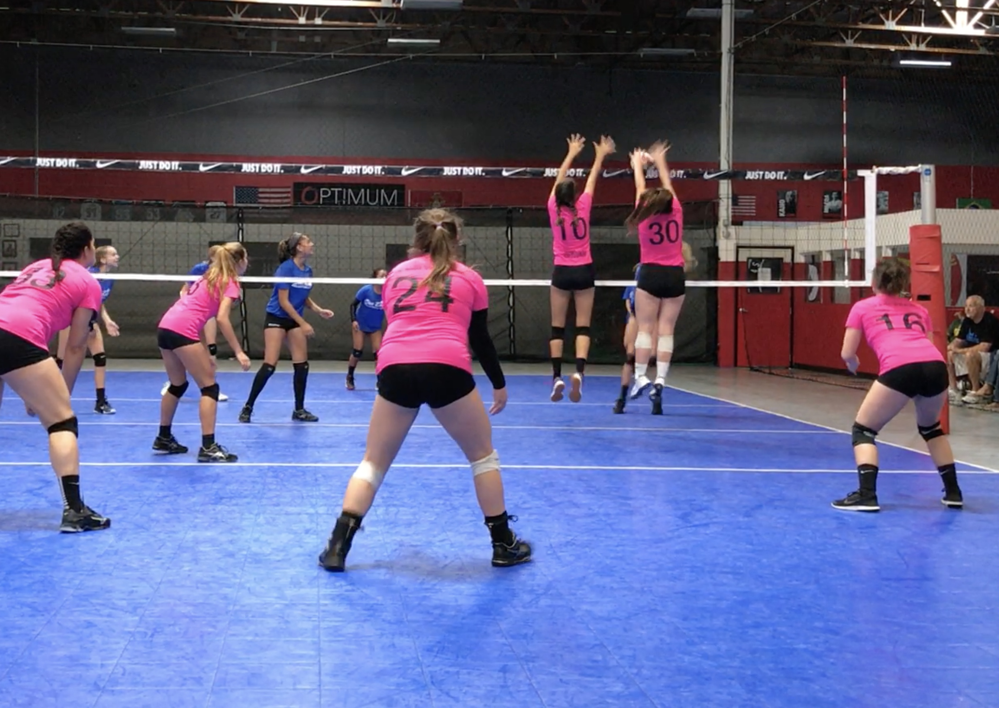

Our Neighborhoods
Our weekday practices are at The Salvation Army Citadel Corps gymnasium. Our Sunday practice location is now Mission Bay High School main gym. La Jolla Volleyball players come from all surrounding areas including La Jolla, Pacific Beach, Clairemont, Bay Park, Linda Vista, Point Loma, Mission Beach, UTC area, and more. Our camps, clinics and teams draw from all over San Diego County.
Practice Locations
We rent these facilities for our club, so please take great care of them with us. Only WATER is allowed on all courts we use, thank you. Mission Bay High School (MBHS) Big Gym, High Tech High – Mesa Campus (HTHM).

Mission Bay High School (“LJHS”)
(Sundays) – centrally located, easy gym access!
2475 Grand Ave., San Diego, CA 92109
MBHS Gymnasium: Enter MBHS campus from Lee Street entrance off Grand Ave. Drive straight ahead into campus until you see the roundabout at the gym entrance on your left, just before the football/soccer field. The Gym is the large/tall building on your left; enter the front main entrance of gym.
entrance to campus.
High Tech High School – Mesa Campus (HTHM)
– weekdays & Tryouts – easy gym access!
5331 Mt. Alifan Drive, San Diego, CA 92111
HTHM Gymnasium: Enter HTHM campus from Mount Acadia Blvd, at Mount Blanca Dr. Drive onto campus and turn left into a smaller parking area by the gym entrance. See map below for campus entry and gym location:
Additionally, at HTH-Mesa, the gate at Mt. Blanca will close at 9:00pm. So, please use the gate at the north end of campus, at Mt. Alifan Dr., and drive along the east side of the buildings (Genessee side of campus) to get to/from the gym after 9:00pm.
The Salvation Army (“TSA”)
(weekdays)
4170 Balboa Ave, San Diego, CA 92117
(at corner of Clairemont Dr.)
DIRECTIONS:
– drive east on Balboa Ave, uphill towards Clairemont HS.
– make a U-turn on Balboa Ave., entrance to TSA campus on your right
(There’s a TuneCraft Auto Center at the corner; The Salvation Army is behind it… entrances to TSA parking lot are on either side of the TuneCraft)
The GYM is the building around in the far back (northeast corner) of the TSA campus. The building is marked “4170B” if you are entering from the rear, enter under the “GYM” awning at end of driveway.
Please do NOT drop off your daughter at the main entrance of TSA on Balboa Ave. Please drive her around back to the gym door entrance. This is for everyone’s safety.
PARKING: There is plenty of FREE parking in the private TSA parking lot. Drive towards the rear (west) end of the parking lot. The gym is the farthest west bdlg, with easy parking around the building.
Please park and walk your daughter into the gym.
At the end of practice, your daughter can be picked up by the gym door, or you may walk into the gym to meet your daughter (or stay to watch practice). Please be ON TIME for pick up, as our coaches need to get home as well, thank you. It is not safe for players to hang out at TSA outdoors in the evening.
La Jolla Shores – grass area for workouts
GOOGLE MAPS: type in “La Jolla Shores Park” … grass area to north of parking lot at La Jolla Shores beach.
Kate Session Park
the grass area for workouts and grass volleyball at the
intersection of Soledad Road and Los Altos Way
GOOGLE MAPS: type in “5000 Soledad Road” for closest address across the street … across from flat grass area.